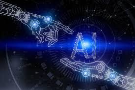

Öncelikle yapay zekanın web tasarımına etkisi var mıdır ?
Evet, yapay zeka web tasarımında önemli bir etkiye sahip olabilir. Yapay zeka, web tasarım süreçlerini daha verimli hale getirebilir ve kullanıcı deneyimini iyileştirebilir.Yapay zeka, web tasarımında kullanıldığında, kullanıcı deneyimini geliştirme, veri analizi ve iş süreçlerini otomatikleştirme gibi bir dizi avantaj sunabilir. Ancak yapay zeka kullanımıyla ilgili dikkate alınması gereken etik ve gizlilik konuları da bulunmaktadır. Yapay zeka kullanımı sırasında kullanıcı verilerinin korunması ve etik standartlara uygun davranılması önemlidir.
Web tasarımı, teknolojinin hızla ilerlemesi ve kullanıcıların beklentilerinin sürekli olarak gelişmesi nedeniyle dinamik ve hızla değişen bir alan. Bu yüzden, web tasarımındaki son trendleri ve teknolojileri takip etmek, kullanıcıların gereksinimlerini karşılamak ve rekabette öne çıkmak için hayati önem taşıyor.Yapay Zekâ (AI), makinelerin öğrenme ve problem çözme gibi insan zekâsına benzer yeteneklere sahip olmasını sağlar. AI, kullanıcı deneyimini kişiselleştirmek ve web sitesinin performansını optimize etmek için web tasarımında kullanılıyor.Web tasarımı, VR, AR ve AI gibi ileri teknolojilerin gelişmesiyle birlikte hızla evriliyor. Bu teknolojiler, kullanıcı deneyimini iyileştirmek, etkileşimi artırmak ve dönüşüm oranlarını artırmak için benzersiz fırsatlar sunuyor.Web tasarımında, bu teknolojilerin potansiyelini tam olarak kullanmak ve kullanıcıların beklentilerini karşılamak için bu teknolojilere adapte olmak önemli. VR, AR ve AI, sadece teknoloji dünyasının trendleri değil, aynı zamanda web tasarımının geleceği de. Bu nedenle, bu teknolojileri anlamak ve etkili bir şekilde kullanmak, her web tasarımcının hedefi olmalıdır.